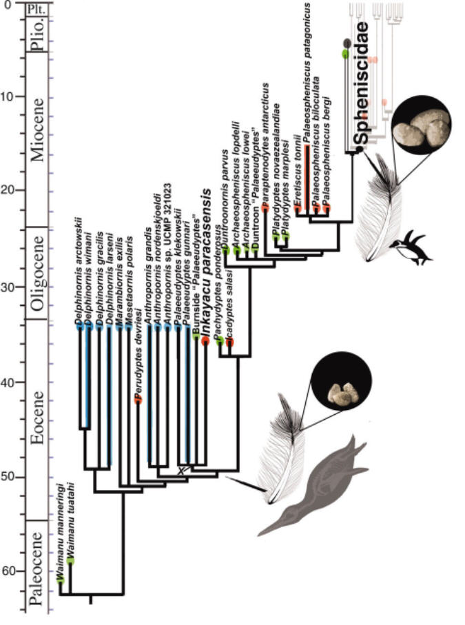
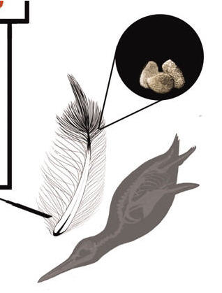
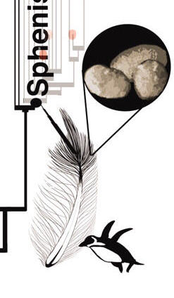

| Feature Article - December 2010 |
| by Do-While Jones |
Penguins make cute inflatable outdoor Christmas decorations, but penguins deflate the theory of evolution.
Evolution is the gift that keeps on giving. Every month the professional scientific literature gives us something to write about. The first sentence of a recent article in Science caught our attention.
|
Penguin feathers are highly modified in form and function, but there have been no fossils to inform their evolution. 1 |
This is typical of evolutionary prejudice. Penguin feathers are much different from other bird feathers, so they must have evolved a lot; but there is no fossil evidence to show that they did. Also typical is the authors' claim that they have found some evidence. They report their discovery of a new extinct penguin they call Inkayacu that supposedly lived 36 million years ago in Peru. Here's what they said,
|
All preserved feather types in Inkayacu record melanosomes of dimensions within the range for avian taxa other than extant [living] penguins. Although the length of extant penguin melanosomes was similar to other eumelanosomes, (mean of ~900 nm), their width (mean of ~440 nm) was far greater than all other Aves [birds] sampled (mean of ~300 nm) and in some cases approached their length (table S3). We thus analyzed them as a separate class in a discriminant analysis. We used four properties of melanosome morphology and distribution--long-axis variation, short-axis skew, aspect ratio, and density--to estimate the color predicted from the fossil feather samples. All six Inkayacu samples were assigned a gray or reddish-brown color with high probability, and none clustered with extant penguin samples. 2 |
Let's translate that into plain English. Their analysis is based on some cells called melanosomes.
|
Melanosomes, the pigment granules that provide tissues with colour and photoprotection, are the cellular site of synthesis, storage and transport of melanin pigments. 3 |
They found some feather fragments and looked at these cells under an electron microscope to measure their shape and size. Modern penguins have melanosomes about 900 nanometers long and 440 nanometers wide, but other birds have smaller ones (about 300 nanometers). These fossilized melanosomes were small, making them much closer to other kinds of birds than penguins. Based on the size and shape of these cells, they tried to estimate what color the extinct penguin feathers would have been. They concluded that the feathers would have been gray or reddish-brown, unlike modern penguins.
This sounds very impressive, but a picture is worth a thousand words. Their Figure 4 shows their postulated evolutionary tree.
|
 |
You can't really see what you need to see in the drawing at that scale. What they did was to compare the cells in the two black circles (enlarged below) and then drew some conclusions.
|
 |
 |
Here are the conclusions they drew.
|
Shifts in penguin plumage coloration indicated by the fossil may be linked to differences in ecology, thermoregulatory demands, or the more recent, predominantly Neogene, diversification of their primary mammalian predators. However, they do not explain the aberrant melanosome morphology associated with extant penguin brown-black color. Indeed, rather than selection for color, these changes may represent an unanticipated response to the hydrodynamic demands of underwater propulsion. Low aspect ratio, large size, and clustered melanosome distribution may affect melanin packing and feather material properties. Melanin confers resistance to fracture, which is important to materials like feathers subjected to cyclical loading. Selective pressures for the color and material properties of penguin feathers could thus have led to nanoscale changes in melanosome morphology. 4 |
In plain English, they think these cells MAY have changed size and shape because of climate change or to avoid predators (despite the fact that it doesn't really explain the brown-black color of modern penguins). But MAYBE the changes in color are somehow related to swimming in water rather than flying. That's because the color MAY be a byproduct of the feather's other properties, such as density and stiffness, which MAY have evolved to improve the ability to swim.
These nine authors deserve a great deal of credit for being able to get a three-page article with such a pretentious title ("Fossil Evidence for Evolution of the Shape and Color of Penguin Feathers") published in a prestigious journal with so little actual evidence. One can only conclude that the authors are either very smart or very stupid.
Since they brought up the subject, let's talk about what we really "know" about bird evolution. A recent article of bird evolution begins this way:
|
Abstract Although well studied, the evolutionary relationships among major avian groups are contentious. Recovering deep evolutionary relationships in birds is difficult, probably reflecting a rapid divergence early in their evolutionary history that has resulted in many distinctive, morphologically cohesive groups (e.g., owls, parrots, and doves) with few, if any, extant intermediary forms linking them to other well-defined groups. This extreme radiation also makes it difficult to place fossil taxa, which further contributes to the difficulty in precisely timing avian divergences. Only two nodes at the base of the avian tree are consistently supported by both molecular and morphological phylogenetic studies. 5 |
In other words, evolutionists have had a hard time classifying birds because they are so different. This, they believe, is because of "a putative explosive radiation." In other words, they think birds evolved so rapidly there was insufficient time for evidence to be left in the fossil record. Furthermore, there are "few, if any, extant intermediary forms linking them to other well-defined groups." That is to say, because birds evolved so rapidly and so much, there are few, if any, obvious connections between living families of birds. As a result, opinions about which bird groups are most closely related to other bird groups "are contentious."
The other important point to note is that the DNA analysis isn't consistent with traditional classification. Back in the 20th century, this was news! Longtime readers of this newsletter will remember that we reported "The DNA Dilemma" in July of 1999 6. The scientific journals of 1998 and 1999 were filled with alarming stories about how the DNA analysis wasn't consistent with traditional classification based on body shape and structure. This was disturbing to evolutionists because they knew that the theory of evolution depends upon the notion that the most closely related creatures should have the most closely related DNA. But, for more than a decade, study after study has shown this isn't true. So now, when DNA analysis ("molecular phylogenetic study") doesn't agree with traditional classification (based on "morphological study"), it is shrugged off.
In the case of birds, only two (of many) branches of the traditional evolutionary tree of birds agree with DNA analysis. It's no big deal (but we better not confuse biology students by telling them that)!
|
One of our most important findings was that several well-accepted orders were not monophyletic. 7 |
In case you aren't familiar with the jargon, orders and phyla are classification groups. "Monophyletic" means "all in the same group." So, one of their most important findings was that some creatures that were previously classified as being in the same biological category really belong in different biological categories.
How do they explain the previous incorrect classification? They trot out their old standby--convergent evolution. They claim that unrelated species happened to evolve features similar to other unrelated species, causing them to be incorrectly classified. That is, different creatures converged on the same solution to particular survival problems.
|
Modern birds occupy a wide diversity of niches and exhibit a variety of behaviors. The broad structure of our phylogeny suggested diversification along general ecological divisions, such as water birds, shorebirds, and land birds. However, adaptations to these environments clearly arose multiple times, because many aquatic birds were not part of the water bird clade (e.g., tropicbirds, flamingos, and grebes) and terrestrial birds were found outside of the land bird clade (e.g., turacos, doves, sandgrouse, and cuckoos). Our phylogeny also indicated several distinctive niches, such as nocturnal (owls, nightjars, and allies), raptorial (falcons, hawks, eagles, New World vultures, seriema, and owls), or pelagic (tubenosed birds, frigatebirds, and tropicbirds) lifestyles, have evolved multiple times. 8 |
Here is their summary:
|
Given the number of nonmonophyletic groups in our study, we compared our results with major classifications [supporting online material (SOM) text]. Unexpectedly, roughly the same percentage (35%) of orders defined by different classifications was not monophyletic relative to the results of our study (Fig. 4). Some orders, such as Gruiformes and the broadly encompassing Ciconiiformes, were particularly problematic. Other traditional orders were not monophyletic because of the exclusion or inclusion of one or a few taxa (e.g., placing Turnix within Charadriiformes contradicts all three classifications). Only six orders were defined consistently across taxonomies and monophyletic in our study (Fig. 4). Given our results, conclusions from comparative studies that depended upon these classifications may need to be re-evaluated in light of this understanding of avian evolution. Deciphering the roots of the avian tree of life has been a lingering problem in evolutionary biology. The inclusion of multiple loci with diverse rates of evolution, particularly the large proportion of rapidly evolving introns, yielded a well-supported phylogenetic tree at multiple taxonomic depths. Although some higher-level avian relationships remain unresolved, simulations suggest that additional sequence data from rapidly evolving loci may resolve these remaining questions. It is also evident that future classifications will change dramatically, based on our phylogenetic study, and that our results will stimulate comparative studies to address the growing number of questions regarding the evolution of birds. 9 |
You may have seen the 2005 movie, March of the Penguins, which won the Academy Award for Best Documentary. In case you didn't here is an excellent summary.
|
Each winter, alone in the pitiless ice deserts of Antarctica, deep in the most inhospitable terrain on Earth, a truly remarkable journey takes place as it has done for millennia. Emperor penguins in their thousands abandon the deep blue security of their ocean home and clamber onto the frozen ice to begin their long journey into a region so bleak, so extreme, it supports no other wildlife at this time of year. In single file, the penguins march blinded by blizzards, buffeted by gale force winds. Guided by instinct, by the otherworldly radiance of the Southern Cross, they head unerringly for their traditional breeding ground where--after a ritual courtship of intricate dances and delicate maneuvering, accompanied by a cacophony of ecstatic song--they will pair off into monogamous couples and mate. The females remain long enough only to lay a single egg. Once this is accomplished, exhausted by weeks without nourishment, they begin their return journey across the ice-field to the fish-filled seas. The male emperors are left behind to guard and hatch the precious eggs, which they cradle at all times on top of their feet. After two long months during which the males eat nothing, the eggs begin to hatch. Once they have emerged into their ghostly white new world, the chicks can not survive for long on their fathers' limited food reserves. If their mothers are late returning from the ocean with food, the newly-hatched young will die. Once the families are reunited, the roles reverse, the mothers remaining with their new young while their mates head, exhausted and starved, for the sea, and food. While the adults fish, the chicks face the ever-present threat of attack by prowling giant petrels. As the weather grows warmer and the ice floes finally begin to crack and melt, the adults will repeat their arduous journey countless times, marching many hundreds of miles over some of the most treacherous territory on Earth, until the chicks are ready to take their first faltering dive into the deep blue waters of the Antarctic. 10 |
Evolutionists have become very skillful at inventing stories that explain how behaviors evolved through natural selection. You've probably heard stories about how clumsy animals fell out of trees. The ones with feathers glided to the ground, so they weren't killed. The best gliders survived and eventually learned how to fly. They think that any plausible explanation is proof of evolution. We've never heard any plausible explanation for the march of the penguins.
Creationists can invent stories, too. They can suggest that God gives the penguins the instinct to do this to teach us a lesson about how God cares for His creatures even in the most difficult situations. Or, they might say God invented this complex mating ritual just to perplex evolutionists. No matter how convincing these stories, they must be accepted by faith. Stories aren't science.
We began this essay reviewing an article published in a respected scientific journal. That article inferred penguin feather color and characteristics based on the smallest (literally) bits of fossil evidence. From the inferred color and texture, they suggested a story about how these changes might have given penguins a survival advantage. It's just a story that one must accept by faith. It's no different from a story a creationist might offer to explain the march of the penguins. If a story is told by a scientist it doesn't become a scientific fact--it's still just a story. Let us remind you of a quote we printed earlier in this essay. When you read it this time, don't try to understand what they are saying. This time, ask yourself, "Is this a story or a fact?"
|
Shifts in penguin plumage coloration indicated by the fossil may be linked to differences in ecology, thermoregulatory demands, or the more recent, predominantly Neogene, diversification of their primary mammalian predators. ... Indeed, rather than selection for color, these changes may represent an unanticipated response to the hydrodynamic demands of underwater propulsion. Low aspect ratio, large size, and clustered melanosome distribution may affect melanin packing and feather material properties. Melanin confers resistance to fracture, which is important to materials like feathers subjected to cyclical loading. Selective pressures for the color and material properties of penguin feathers could thus have led to nanoscale changes in melanosome morphology. 11 |
It sounds scientific, but it's just speculation about what might have happened. It's not falsifiable. It isn't based on experimental data. There's no reason to believe that it is true, other than the authority of the person who is saying it. It is a perversion of science.
| Quick links to | |||
|---|---|---|---|
| Science Against Evolution Home Page |
Back issues of Disclosure (our newsletter) |
Web Site of the Month |
Topical Index |
Footnotes:
1
Clarke, et al., Science, 12 November 2010, "Fossil Evidence for Evolution of the Shape and Color of Penguin Feathers", pages 954-957
2
ibid.
3
Wasmeier, et al., Journal of Cell Science, December, 2008, "Melanosomes at a glance", pages 3995-3999, http://jcs.biologists.org/cgi/content/full/121/24/3995
4
Clarke, et al., Science, 12 November 2010, "Fossil Evidence for Evolution of the Shape and Color of Penguin Feathers", pages 954-957
5
Hackett, et al., Science, 27 June 2008, "A Phylogenomic Study of Birds Reveals Their Evolutionary History", pp. 1763-1768, http://www.sciencemag.org/content/320/5884/1763.full
6
Disclosure, July 1999, "The DNA Dilemma", http://scienceagainstevolution.org/v3i10f.htm
7
Hackett, et al., Science, 27 June 2008, "A Phylogenomic Study of Birds Reveals Their Evolutionary History", pp. 1763-1768, http://www.sciencemag.org/content/320/5884/1763.full
8
ibid.
9
ibid.
10
Sujit R. Varma, http://www.imdb.com/title/tt0428803/plotsummary
11
Clarke, et al., Science, 12 November 2010, "Fossil Evidence for Evolution of the Shape and Color of Penguin Feathers", pages 954-957